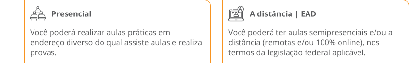

![Um texto ao lado esquerdo que diz: Contrato Prestação de Serviços. Olá! Somos a Anhanguera Educacional! Já transformamos a vida de mais de um milhão de pessoas em 20 anos de compromisso com a educação. Oferecemos conveniência e conteúdo compatível com o mercado de trabalho em cursos de graduação, pós-graduação, extensão e Pronatec, contribuindo com o projeto de vida de crescimento e ascensão profissional dos nossos estudantes. A gente acredita que você pode ser quem quiser! Que tal fazer parte da nossa história e nos deixar fazer parte da sua? Vamos juntos nessa caminhada para o conhecimento. Ao lado direito, uma ilustração de um homem jovem usando fones de ouvido e olhando o celular, e ao lado dele a tela do celular em destaque, como se fosse a página inicial do site da Anhanguera.](img/boas vindas.svg)
Siga a trilha do sucesso profissional
![Um infográfico que mostra as etapas do processo educacional. Na primeira etapa, o título Vestibular seguido do texto: 'Você escolhe o curso e se inscreve no vestibular'. Na segunda, o título Matrícula seguido do texto: 'Faz a matrícula e realiza o pagamento da primeira mensalidade'. Na terceira etapa, o título Portal do Aluno seguido do texto: 'Acessa o portal, preenche seus dados e assina o contrato'. Na quarta etapa, o título Estudos seguido do texto: 'Assiste as aulas e realiza as atividades do curso'. Na quinta etapa, o título Formatura seguido do texto: 'Tudo certo com seus documentos? É hora da formatura!'. Na última etapa, o título Sucesso profissional seguido do texto: 'Agora é só partir para o mercado de trabalho'](img/jornada.svg)
1. Informações gerais
Quadro resumo das partes
Partes são os envolvidos em um contrato. As partes abaixo descritas firmam o Contrato de Prestação de Serviços Educacionais, com base no Estatuto e Regimento da Instituição de Ensino Superior, nas disposições do Código de Defesa do Consumidor, Lei 9.870/99 e nas Cláusulas a seguir:
Anhanguera Educacional Participações S.A
CNPJ/ME: 04.310.392/0001-46
Endereço: Alameda Maria Tereza, 4266 - Bairro Dois Córregos - Valinhos/SP
Definida nesse contrato como: Instituição de Ensino Superior ou IES
Estudante
Identificado e qualificado no quadro abaixo, ou seu representante legal (pai, mãe ou responsável quando menor de 18 anos).
Definido nesse contrato como: Estudante ou Você
Preencha o formulário abaixo com seus dados:
CURSO
Curso
#CURSO#
Período
#PERIODO#
Registro Acadêmico
#CODNOVO#
Turma
#TURMA#
Termo
#TERMO#
Regime
#REGIME#
Forma de Ingresso
#FORMAINGRESSO#
Modalidade
#MODALIDADE#
Data de Ingresso
#DATAINGR#
Vigência
#SEMESTRAL#
Mantida
#MANTIDA#
Endereço da mantida
#ENDERECOMANTIDA#
Bairro
#BAIRRO#
Cidade
#CIDADE#
UF
#UF#
CEP
#CEP#
ESTUDANTE
Nome completo
#NOME#
RG
#RG#
Órg. exp
#EXPRG#
UF
#UFRG#
CPF
#CPF#
Sexo
#SEXO#
Telefone
#FONE#
Estado civil
#ESTADO#
Data de nasc.
#DATAN#
Idade
#IDADE#
Naturalidade
#NATURALIDADE#
UF
#UF#
Nacionalidade
#NACIONALIDADE#
Endereço
#ENDERECO#
Bairro
#BAIRRO#
Cidade
#CIDADE#
UF
#UE#
CEP
#CEP#
ESTUDANTE BENEFICIÁRIO | MENOR DE 18 ANOS
Nome do pai
#PAI#
Nome da mãe
#MAE#
Nome do responsável
#RESP#
FINANCEIRO
Valor do semestre
#VALOR#
VALOR MENSAL
#VALORPARCELA#
Vencimento da parcela
#5º DIA ÚTIL#
VALORES COM BOLSA INCENTIVO E EVENTUAIS DESCONTOS
Valor por semestre
@SEMEBOLSA
Valor por semestre
@SemeBolsa1ºSem
Valor por semestre
@mensalbolsa
Valor por semestre
@mensalbolsa1ºsem
SEMESTRE ATUAL: XX PERÍODO
| DESCRIÇÃO | MÊS | ANO | MÊS | ANO | MÊS | ANO | MÊS | ANO | MÊS | ANO | MÊS | ANO | VIGÊNCIA |
|---|---|---|---|---|---|---|---|
| Mensalidade bruta | R$ 000,00 | R$ 000,00 | R$ 000,00 | R$ 000,00 | R$ 000,00 | R$ 000,00 | Não se aplica |
| Bolsa de estudos | R$ 000,00 | R$ 000,00 | R$ 000,00 | R$ 000,00 | R$ 000,00 | R$ 000,00 | 1º semestre |
| Bolsa de estudos | R$ 000,00 | R$ 000,00 | R$ 000,00 | R$ 000,00 | R$ 000,00 | R$ 000,00 | Integral |
| Desconto por pontualidade | R$ 000,00 | R$ 000,00 | R$ 000,00 | R$ 000,00 | R$ 000,00 | R$ 000,00 | Não se aplica |
| Valor a pagar | R$ 000,00 | R$ 000,00 | R$ 000,00 | R$ 000,00 | R$ 000,00 | R$ 000,00 | Não se aplica |
* Bolsa 1º semestre = bolsa concedida para as mensalidades escolares do 1º semestre. Pode ser concedida de forma deliberativa pela IES.
De que se trata o contrato, local dos serviços e transferência?
O contrato garante a prestação de serviços educacionais de nível superior pela IES ao ESTUDANTE, durante o semestre letivo, independentemente da data da matrícula, no Curso de graduação ambos especificados na Tabela acima. Por exemplo, o aluno pode se matricular em abril, para o 1º semestre, porém o contrato será válido por todo o semestre.
As aulas e demais atividades escolares seguem o projeto pedagógico, programas de disciplinas e currículos aprovados pela IES.
O contrato é válido para o semestre letivo que o ESTUDANTE fez a matrícula.
![No primeiro quadro lê-se: Responsabilidades da IES. É de nossa responsabilidade exclusiva, conforme a legislação: orientação técnica aos serviços de ensino; orientação pedagógica-educacional; fixação da grade curricular e carga horária; determinação do calendário escolar; ensalamento de turmas; definição do professor responsável; definição do horário de funcionamento; fixação das normas disciplinares; Ddtas em modalidades de verificações de aproveitamento; definição de material escolar e didático; contratação de docentes e demais profissionais; organização administrativo-financeira; demais providências que suas atividades didático-pedagógicas exijam ou venham a exigir. No segundo quadro lê-se: Serviços específicos. Serviços que não estão incluídos no contrato educacional e no valor do semestre e da mensalidade: Exame de segunda chamada; segunda via de documentos do curso e do estudante; solicitação de revisão de prova; matrícula em turma especial; disciplinas estudos dirigidos decorrentes de reprovação; certidões do estudante; declarações; atestados; históricos escolares do estudante; guias de transferência; diploma digital em papel especial; outros serviços complementares, destinados ao estudante.](img/responsabilidades.svg)
1.3 Normas Gerais
A IES prestará os serviços educacionais de acordo com as Normas Gerais disponíveis no endereço eletrônico ou no canal de atendimento ao aluno da instituição de ensino.
1.4 Local da Prestação dos Serviços
As aulas acontecerão em salas de aula, ambientes virtuais ou locais que a IES indicar, de acordo com a natureza do conteúdo e da técnica pedagógica adotada, nas seguintes modalidades:
![Em razão da pandemia de Covid-19 e outras circunstâncias excepcionais que possam ocorrer, conforme autorizado por autoridades regulatórias e recomendado por autoridades sanitárias públicas e/ou pela IES, e seguindo diretrizes dos Poderes Públicos Federal, Estadual e Municipal, a IES, mesmo em cursos presenciais, se reserva no direito de ministrar, integral ou parcialmente durante o semestre/ano letivo, aulas/atividades na modalidade a distância (remotas e/ou 100% online) através do uso de plataformas próprias e/ou disponíveis no mercado, que substituirão as aulas/atividades presenciais do curso, mantendo-se o mesmo valor da semestralidade/mensalidade escolar prevista neste Contrato.](img/aviso-virus.svg)
1.5 Migração
A IES poderá migrar o serviço educacional prestado ao ESTUDANTE de modalidade de ensino presencial para modalidade de ensino a distância, conforme legislação aplicável.
1.6 Transferência
O ESTUDANTE está ciente e concorda quanto à possibilidade da IES realizar a transferência de seu Curso para Instituição de Ensino diversa e integrante do mesmo grupo econômico da Anhanguera, condorme definido pela legislação aplicável. Havendo essa hipótese, caso aplicável ao ESTUDANTE, eventuais valores decorrentes de mensalidades escolares efetivamente pago à Anhanguera, bolsas e/ou descontos concedidos, serão mantidos e considerados válidos pela IES transferida. Quaisquer certificados e/ou diploma de graduação serão emitidos pela IES transferida.
Formas de contratação
Pode acontecer de duas maneiras:

1.1 Renovação de matrícula
Para serviços de renovação de matrícula, transferência de modalidade de estudo, transferência de curso, transferência de aula, transferência de unidade e trancamento de matrícula, o ESTUDANTE poderá solicitá-los pessoalmente, via web (plataforma da IES) ou call center, ou por outro meio que a IES disponibilizar.
1.2 Renovação de bolsa
A bolsa de estudos parcial ou integral concedida pela IES ao ESTUDANTE terá vigência a partir da data de sua concessão, sendo que a renovação da matrícula para o semestre subsequente não representará a manutenção automática da bolsa de estudos.
Informações do curso
É importante conhecer sobre novas turmas, continuação de cursos e serviços do portal:
1.1 Turma presencial
A IES pode não iniciar o Curso, caso as matrículas não atinjam o percentual mínimo equivalente a 60% (sessenta por cento) das vagas oferecidas. Nesta hipótese, o ESTUDANTE receberá o valor total pago pela inscrição no vestibular e pagamento da primeira mensalidade (matrícula).
Cursos podem ser descontinuados, caso o número de rematrículas não atinja o percentual mínimo equivalente a 60% (sessenta por cento) das vagas oferecidas em determinado período letivo e turno. Caso esta hipótese ocorra, na medida da conclusão das disciplinas comuns em curso diferente do pretendido, será facultado ao ESTUDANTE a migração para outro curso oferecido pela IES, aproveitando academicamente as disciplinas cursadas, conforme compatibilidade de grade curricular.
1.2 Curso a distância
Caso o curso escolhido na modalidade a distância pelo ESTUDANTE não atinja o número mínimo para formação de turma, este poderá iniciar seus estudos em turma de outro curso correlato, na modalidade à distância (semipresencial), sem prejuízo do programa pedagógico do seu Curso, estando ciente e de pleno de acordo que, após concluídas as disciplinas comuns em curso distinto do pretendido, ocorrerá a migração automática para o curso inicial escolhido, sendo mantida, se houver, eventuais bolsas e descontos.
Se o número mínimo para formação de turma não for alcançado, o ESTUDANTE poderá optar entre:
- Migrar para outro curso oferecido pela IES, observando-se as condições deste novo curso e sendo mantida, se houver, eventuais bolsas ou descontos;
- Desistir do curso e ser ressarcido do valor pago pela inscrição no vestibular e eventuais valor(es) pago(s) da(s) mensalidade(s) escolar(es).
1.3 Portal de serviços do aluno
Uso da senha
As senhas de acesso a sistemas da IES são de uso pessoal e não podem ser compartilhadas. Caso aconteçam danos, por acesso de pessoas não autorizadas, a IES não poderá ser responsabilizada.
Direitos da Plataforma
A IES possui todos os direitos intelectuais das plataformas utilizadas pelos alunos e suas respectivas funcionalidades, módulos, e que não está, de qualquer forma, impedida de disponibilizá-la, garantindo que não viola qualquer direito de propriedade intelectual, incluindo patente, direito de autor, segredo industrial ou quaisquer outros direitos de terceiros ou preceitos legais nacionais ou estrangeiros.
O ESTUDANTE se compromete, portanto, a não causar, bem como a não permitir que ocorra a engenharia reversa, decomposição, desmontar, copiar, modificar, reproduzir, sublicenciar, publicar, divulgar, transmitir, emprestar, distribuir ou, de qualquer outra maneira, dispor de sua(s) plataforma(s), ou de qualquer de suas funcionalidades e/ou componentes, sob pena de suspensão da conta de acesso e descumprimento contratual, sem prejuízo de perdas e danos.
Disponibilidade
A IES se empenhará para manter a disponibilidade de sua(s) plataforma(s). No entanto, pode ocorrer, eventualmente, alguma indisponibilidade temporária decorrente de manutenção necessária ou mesmo gerada por motivo de força maior, como desastres naturais, falhas nos sistemas de comunicação e acesso à Internet, ataques cibernéticos invasivos, etc.
Caso ocorra, a IES não medirá esforços para restabelecer a(s) plataforma(s) o mais breve possível, dentro das limitações técnicas de seus serviços e serviços de terceiros, dos quais depende para ficar online. O ESTUDANTE tem ciência, portanto, que não poderá pleitear indenização ou reparação de danos no caso da(s) plataforma(s) permanecer(em) fora do ar, independente da motivação.
2. Temas financeiros
2.1 Valor e Forma de Pagamento
Para receber os serviços educacionais, o ESTUDANTE pagará o valor da mensalidade ou semestralidade descritos na tabela de pagamentos.
Sobre o valor da mensalidade, a UNIVERSIDADE poderá conceder descontos determinados conforme política adotada.
As mensalidades escolares posteriores à matrícula deverão ser pagas pelo ESTUDANTE até a data descrita na Tabela deste Contrato, via rede bancária por meio de boleto ou cartão de crédito e/ou débito, diretamente no setor da UNIVERSIDADE específico para atendimento ao aluno e, também, no seu endereço eletrônico, devendo o ESTUDANTE providenciar sua obtenção e pagamento no prazo contratual.
O(s) valor(es) da(s) disciplina(s) de reprova e/ou que sejam acrescidas à grade curricular pelo (a) UNIVERSIDADE possui(em) o mesmo valor(es) da(s) disciplina(s) regular(es) do Curso, observada(s) a carga horária de cada disciplina.
Reajuste
O valor dos serviços educacionais descritos neste Contrato (valor do semestre e o valor da mensalidade), podem sofrer reajustes e revisões anuais, conforme autorizado pela Lei 9.870 de 23.11.99.
Na hipótese do ESTUDANTE cursar um número menor de disciplinas no semestre letivo em relação à grade curricular regular do semestre, mensalidade escolar devida pelo ESTUDANTE será ajustada nos termos da Lei de Mensalidades Escolares (Lei 9.870/99), compreendendo(a) o número de disciplinas cursadas; (b) os custos fixos da UNIVERSIDADE e serviços que estarão disponibilizados em tempo integral ao ESTUDANTE, tais como laboratórios de informática, biblioteca, setores de atendimentos, considerando-se, para os fins previstos nesta cláusula, o percentual de 20% (vinte por cento) sobre o total da semestralidade correspondente à grade curricular regular, o qual será aplicado integralmente.
Em caso de aumento da carga tributária incidente sobre o serviço de ensino, a UNIVERSIDADE se reserva no direito de reajustar o valor da mensalidade escolar na mesma proporção.
Política de descontos e bolsas
O ESTUDANTE reconhece que eventuais descontos ou benefícios concedidos pela UNIVERSIDADE serão válidos para o semestre letivo vigente, e, quando aplicável, para os demais semestres, respeitando-se a condição de elegibilidade e periodicidade de cada desconto e/ou bolsa.
Na hipótese de a UNIVERSIDADE ter concedido algum desconto ao ESTUDANTE ou condição mais benéfica no valor da semestralidade/mensalidade, em decorrência de alguma premissa/condição atingida, incluindo, mas não se limitando a descontos concedidos por convênios, parcerias, dentre outros e, por qualquer motivo, a referida premissa/condição deixar de existir, o desconto ou benefício ora concedido ao ESTUDANTE poderá, a exclusivo critério da UNIVERSIDADE, ser cancelado e o valor das prestações retornará ao valor base original, a partir do primeiro pagamento subsequente à inexistência da premissa/condição do desconto ou benefício.
A UNIVERSIDADE poderá conceder ao ESTUDANTE gratuidade(s) escolar(es) (Bolsa de Estudos), aplicado sobre o valor do semestre para alunos calouros durante o primeiro semestre do Curso, reservando-se a UNIVERSIDADE o direito a cancelar e/ou reduzir o percentual da bolsa de estudos para os semestres letivos subsequentes ao primeiro.
Eventual bolsa de estudos concedida no primeiro semestre não acumulará com as demais bolsas de estudos oferecidas pela UNIVERSIDADE.
O ESTUDANTE candidato a qualquer modalidade de bolsa de estudos e/ou financiamento estudantil deverá efetuar o pagamento das mensalidades escolares até a data de eventual concessão de bolsa de estudos e/ou financiamento pleiteado.
Adimplemento contratual
O não comparecimento às aulas e demais atividades escolares não desobriga o ESTUDANTE do pagamento da(s) mensalidade(s) escolar(es), tendo em vista os serviços educacionais colocados à disposição pela UNIVERSIDADE.
2.2 Mora
Inadimplemento
Caso haja atraso no pagamento da mensalidade escolar, o ESTUDANTE ficará constituído em mora, nos termos do Artigo 397 do Código Civil, e o valor do débito original será acrescido dos seguintes encargos:
- Multa moratório de 2% (dois por cento);
- Juros de mora de 1%(um por cento) ao mês calculados proporcionalmente ao dia (por cada dia);
- Correção monetária pelo IPCA/ibge;
- Honorários advocatícios fixados em 10% (dez por cento) para cobranças extrajudiciais e 20% (vinte por cento) para cobranças judiciais, sem prejuízo de protesto e/ou negativação do título e/ou cobrança judicial.
Não renovação
Caso o ESTUDANTE permaneça inadimplente, a renovação deste Contrato para o semestre letivo subsequente estará condicionada à quitação integral da(s) mensalidade(s) escolar(es) inadimplida(s) com os acréscimos.
Meios de cobrança
Eventuais cobranças poderão ser feitas através de todos os meios permitidos em lei, incluindo, mas não se limitando a telefonemas, e-mails, correio, SMS (“serviço de mensagens curtas”), WhatsApp, de acordo com os dados fornecidos no Contrato e observando-se os termos da legislação aplicável.
Cancelamento de desconto
Em caso de atraso no pagamento de qualquer mensalidade, o ESTUDANTE poderá perder todo e qualquer desconto do qual seja eventualmente beneficiário(a).
Caso o ESTUDANTE seja beneficiário de bolsa de estudos parcial, a mensalidade escolar em atraso deverá ser paga na íntegra, com os acréscimos previstos, sem qualquer abatimento ou desconto em relação ao mês em atraso.
Caso o ESTUDANTE seja beneficiário de bolsa(s) de estudo(s) integral ou parcial em que o pagamento desta(s) seja de responsabilidade de pessoa jurídica indicada pelo ESTUDANTE, fica ciente o ESTUDANTE que havendo inadimplemento de qualquer das partes (tanto por parte do ESTUDANTE e/ou da pessoa jurídica responsável pelo pagamento da bolsa) ambos passam a ser devedores solidários da totalidade da(s) mensalidade(s) vencida(s) e não paga(s), renunciando expressamente ao benefício de ordem prevista na legislação civil brasileira, ficando a UNIVERSIDADE facultada a proceder à cobrança da totalidade da dívida junto ao ESTUDANTE diretamente.
A UNIVERSIDADE poderá, em caso de inadimplência do ESTUDANTE, informar o nome do ESTUDANTE ao serviço de proteção ao crédito – SPC e demais órgãos de restrição ao crédito. Os custos e as despesas decorrentes do inadimplemento pelas Partes de quaisquer obrigações deste Contrato, incluindo-se as perdas e danos e honorários advocatícios, serão suportados pela parte que deu causa ao inadimplemento. Os honorários advocatícios, em caso de atuação administrativa, quando couberem, serão limitados a 10% (dez por cento) sobre o valor do débito atualizado.
Cessão de crédito
O ESTUDANTE, com base no artigo 290, do Código Civil, declara-se expressamente ciente que os créditos relativos às mensalidades escolares, taxas de serviços administrativos e acordos, oriundas deste Contrato poderão ser objeto de cessão de crédito, independentemente de anuência prévia do ESTUDANTE.
Compensação de valores
Nos termos do artigo 368, do Código Civil, o ESTUDANTE, autoriza e concorda que a UNIVERSIDADE realize a compensação automática de eventuais créditos e débitos decorrentes do pagamento e/ou recebimento de encargos educacionais e/ou quaisquer outros valores devidos de parte à parte em razão da prestação dos serviços educacionais, podendo tal compensação ocorrer em mensalidades escolares pagas diretamente pelo ESTUDANTE à UNIVERSIDADE; em parcelas ou saldo de parcelamentos privados concedidos pela UNIVERSIDADE ao ESTUDANTE; e/ou, observando a legislação aplicável, em parcelas decorrentes de aditamento (os) realizado (os) pelo ESTUDANTE em programas governamentais (FIES).
2.3 Contratação FIES/PROUNI
Programas governamentais
Ao firmar contrato de financiamento estudantil (“FIES”) ou programa equivalente, ficará o ESTUDANTE obrigado a cumprir integralmente as suas normas, inclusive efetuando os aditamentos periódicos. Cessando os benefícios decorrentes do FIES, a UNIVERSIDADE realizará a cobrança dos débitos do ESTUDANTE que não tenham sido quitados pelo programa. É dever do ESTUDANTE, se beneficiário do FIES, verificar junto à UNIVERSIDADE, eventuais descontos na mensalidade escolar a que o ESTUDANTE merecer, conforme Lei 10.260/2001 (“Lei do FIES”).
O ESTUDANTE tem ciência de que o valor da semestralidade do curso em que se matriculou, fixado na forma da Lei 9.870/1999 (“Lei de Mensalidades”) não se confunde com o valor de financiamento FIES estabelecido de acordo com o artigo 4º, da Lei do FIES, com redação vigente à época em que obteve o benefício correspondente.
Valores não cobertos
Caso as limitações normativas e sistêmicas do Fundo Nacional de Desenvolvimento da Educação (“FNDE”) impeçam o financiamento da totalidade do semestre escolar pelo ESTUDANTE), a diferença entre o valor financiado pelo FIES (ainda que corresponda a 100% da semestralidade escolar máxima financiada pelo FIES) e o valor total do semestre escolar praticado pela UNIVERSIDADE deverá ser pago pelo ESTUDANTE diretamente à UNIVERSIDADE.
O ESTUDANTE reconhece que o valor do semestre poderá ser superior ao valor máximo financiado pelo FIES através do FNDE, autorizando a UNIVERSIDADE à cobrança diretamente da diferença.
Cancelamento FIES
Caso o ESTUDANTE seja beneficiário (a) de financiamento governamental (FIES) e não deseje renovar a matrícula do Curso para o semestre letivo subsequente, deverá o (a) formalizar o desligamento junto à UNIVERSIDADE. Não sendo o desligamento formalizado até o início das aulas do semestre letivo, o ESTUDANTE ficará responsável pelo pagamento das mensalidades escolares do semestre letivo até a expiração do prazo para aditamento do contrato de financiamento governamental, conforme a legislação do FIES, considerando a obrigação da UNIVERSIDADE em manter a vaga à disposição do ESTUDANTE.
Caso o ESTUDANTE seja beneficiário (a) do FIES e encerre o vínculo com a UNIVERSIDADE durante o semestre letivo, o (a) mesmo (a) deverá formalizar junto ao FNDE, nos termos da legislação aplicável, que houve o término do vínculo para fins de serem cessados de imediato os repasses de FIES para a UNIVERSIDADE.
Disposições Prouni
O ESTUDANTE, beneficiário (a) do Programa Universidade Para Todos – PROUNI, estará isento(a) do pagamento das mensalidades escolares, conforme percentual de gratuidade obtido no PROUNI. Caso o ESTUDANTE perca a condição de beneficiário (a) do PROUNI, deverá pagar o valor integral da mensalidade escolar.
Caso o ESTUDANTE seja beneficiário (a) de PROUNI parcial, sendo responsável pelo pagamento de parte da mensalidade escolar, sobre o valor proporcional pago da mensalidade se aplicarão todas as disposições deste Contrato.
3. Vigência e extinção do contrato
O que significa a vigência do contrato?
Período em que os contratos firmados produzem direitos e obrigações para as partes contratantes.
Qual a vigência deste Contrato de Prestação de Serviços Educacionais?
Um semestre letivo e será prorrogado, automaticamente, por igual período até a conclusão do Curso pelo ESTUDANTE, observando-se as correções da mensalidade escolar admitidas pela legislação em vigor, desde que:
- o Contrato não seja alterado pela UNIVERSIDADE;
- o ESTUDANTE efetue o pagamento da primeira mensalidade (matrícula) relativa ao semestre letivo subsequente e não existam mensalidades em atraso junto à UNIVERSIDADE.
3.1 Rematrícula
O pagamento da primeira mensalidade para o semestre subsequente (rematrícula) representa o aceite expresso do ESTUDANTE para adesão ao Contrato vigente e seu interesse em manter o vínculo com a UNIVERSIDADE por mais um semestre letivo.
3.2 Extinção do contrato
Quando o contrato poderá ser rescindido?
- por desistência ou trancamento, devidamente formalizados pelo ESTUDANTE junto à UNIVERSIDADE;
- pela UNIVERSIDADE;
- por descumprimento contratual de quaisquer das Partes.
Desistência
O ESTUDANTE poderá solicitar a desistência do Curso em qualquer época do semestre, junto à UNIVERSIDADE, e deve realizar o pagamento integral das mensalidades escolares até o mês da solicitação.
Na hipótese de desistência do Curso antes do início das aulas, possibilitando a convocação pela UNIVERSIDADE do próximo classificado no processo seletivo, será restituído ao ESTUDANTE 80% do valor pago na primeira mensalidade (matrícula).
Não será restituído qualquer valor ao estudante, em caso de desistência após a data de início das atividades escolares, conforme calendário acadêmico.
Trancamento
Se trancar a matrícula, o ESTUDANTE deverá pagar as mensalidades escolares até o mês do referido trancamento e perderá eventual bolsa de estudos e/ou descontos concedidos pela UNIVERSIDADE.
Se a rematrícula na UNIVERSIDADE não for realizada no prazo de 02 (dois) anos, a contar do trancamento, o ESTUDANTE incidirá no pagamento de multa a favor da UNIVERSIDADE no valor correspondente a 10% (dez por cento) das mensalidades a vencer até o término do semestre objeto do trancamento, desconsiderando-se eventual desconto, de qualquer natureza, concedido pela UNIVERSIDADE ao ESTUDANTE ou gratuidade (bolsa) recebida pelo ESTUDANTE.
O ESTUDANTE na situação de aluno trancado, ao retornar as atividades acadêmicas, está sujeito às adaptações que se fizerem necessárias para o cumprimento da matriz curricular que estiver ativa quando do seu retorno ao curso.
Rescisão pela UNIVERSIDADE
Em caso de desligamento por iniciativa da UNIVERSIDADE, o ESTUDANTE deverá pagar o valor da mensalidade escolar até o mês em que ocorrer o desligamento.
Abandono
A não participação e/ou não comparecimento do ESTUDANTE às aulas ou, ainda, a sua desistência (abandono) do Curso sem a devida formalização junto à UNIVERSIDADE, não desobriga o pagamento das mensalidades escolares a vencer até o término do semestre letivo, considerando que a vaga permanecerá à disposição do ESTUDANTE até o seu término.
Multa
Considerando que a UNIVERSIDADE disponibilizou a vaga durante todo o semestre letivo, a rescisão deste Contrato pelo ESTUDANTE (desligamento comunicado pelo ESTUDANTE à UNIVERSIDADE) antes do término do semestre letivo em curso, implicará em multa a favor da UNIVERSIDADE no montante correspondente a 10% (dez por cento) das mensalidades escolares a vencer até o término do semestre em curso, desconsiderando-se eventual bolsa de estudos concedida pela UNIVERSIDADE ao ESTUDANTE.
Bolsa de estudos
Se o beneficiário de bolsa de estudos parcial ou integral durante o semestre letivo e desista do curso antes do término do semestre cursado, o estudante deverá restituir à UNIVERSIDADE o valor correspondente à bolsa de estudos recebida, já que o objetivo da bolsa de estudos é o estudante concluir o semestre letivo em que receber o benefício.
3.3 Rescisão e responsabilidades da contratada
Rescisão pela universidade Quando a UNIVERSIDADE poderá rescindir o Contrato?
- Caso o ESTUDANTE pratique atos de indisciplina, ilícitos ou contrários ao Código Penal e demais leis aplicáveis no Brasil;
- Caso o ESTUDANTE comprometa ou ameace a integridade física e psíquica do corpo docente e discente, auxiliares ou administradores, denigram a imagem ou reputação da UNIVERSIDADE, dentro ou fora do espaço físico, inclusive com o uso da Internet, mídias sociais e afins;
- Caso o ESTUDANTE desrespeite o Regimento Geral e demais normas da UNIVERSIDADE, Projeto Pedagógico e demais documentos normativos, à ética, à moral, cidadania, ou aos bons costumes.
Hipótese de rescisão Caso se torne impossível a manutenção da frequência nas aulas e/ou atividades escolares, bem como agindo de forma prejudicial ao andamento das aulas, prejudicando a continuação do ESTUDANTE na instituição UNIVERSIDADE; inviabilize ou dificulte seu relacionamento com os demais colegas, ou de seus representantes legais com a comunidade escolar, após todas as providências terem sido tomadas pela UNIVERSIDADE com a devida ciência do ESTUDANTE, o contrato poderá ser rescindido.
4. Sua imagem e dados pessoais
4.1 Sobre uso de fotos, vídeos e gravações no ambiente escolar
Proibição
Não é permitido ao ESTUDANTE tirar fotos, gravar, filmar, publicar e/ou compartilhar imagens de dentro da sala de aula e/ou das demais dependências da UNIVERSIDADE, de outros colegas, docentes, colaboradores ou quaisquer terceiros, sem autorização prévia da Direção (“Conteúdo Não Autorizado”), à exceção das situações já previamente avisadas e autorizadas em eventos educacionais ou sociais públicos.
Compartilhamento
O compartilhamento público de Conteúdo Não Autorizado em qualquer meio, inclusive na Internet, Mídias Sociais, Celulares e Aplicativos Sociais, será avaliado pela UNIVERSIDADE para fins de aplicação de medida disciplinar para o ESTUDANTE.
4.2 Autorização de veiculação de imagem
Autorização do uso de imagem
O ESTUDANTE ou seu responsável legal concede, expressa e gratuitamente, o direito de utilização de imagem e voz do ESTUDANTE, para fins de registro de atividades escolares e/ou de acervo histórico, em campanhas institucionais, materiais impressos, audiovisuais e virtuais, incluindo mídias sociais e endereços eletrônicos da UNIVERSIDADE ou de quaisquer empresas do mesmo grupo econômico da UNIVERSIDADE. Caso o ESTUDANTE não esteja de acordo com os usos aqui previstos, deverá manifestar sua discordância, por escrito, ao canal de atendimento ao ALUNO, a qualquer tempo.
Direitos do ESTUDANTE
A UNIVERSIDADE declara que estão ressalvados os direitos, como a honra, reputação, boa fama, sendo que o uso da imagem, voz e som do ESTUDANTE serão feitos apenas nos limites acordados, sem exposição ao ridículo ou a situações constrangedoras por parte da UNIVERSIDADE, atendendo as leis em vigor no Brasil.
Se a imagem do ESTUDANTE for compartilhada em outros ambientes físicos ou digitais, a responsabilidade não será da UNIVERSIDADE.
4.3 Monitoramento e inspeção (tratamento de dados pessoais)
Monitoramento
É importante saber que é realizado monitoramento físico e lógico dos ambientes, podendo ser inclusive por meio do uso de câmeras, com coleta de imagem e áudio, que podem ser armazenados para fins administrativos e legais, pelo período necessário para resguardar direitos e obrigações da UNIVERSIDADE.
Na hipótese de aplicação de avaliações e/ou provas em ambientes virtuais pela UNIVERSIDADE, o ESTUDANTE ou seu responsável legal, desde já, declara(m) que possui(em) aparelho(s) eletrônico(s) compatível(eis) para realização das avaliações e/ou provas e autoriza(m) expressamente a validação da autenticidade e pessoalidade do aluno da prova por meio de captura de sua imagem, incluindo seu arquivamento para fins de registro.
4.4 Responsabilidades da universidade
Uso indevido de imagem
A UNIVERSIDADE não se responsabiliza pelo uso indevido das imagens do ESTUDANTE captadas e/ou veiculadas por terceiros não autorizados, entre os próprios alunos de imagens captadas de maneira contrária à autorizada pela UNIVERSIDADE, sendo que a responsabilidade recairá diretamente ao ESTUDANTE.
Prejuízo à terceiro
A UNIVERSIDADE não poderá ser responsabilizada por qualquer dano causado por atos de indisciplina que venha a gerar prejuízo a terceiros, inclusive outros alunos, sendo que a completa responsabilidade recairá sobre o ESTUDANTE.
Tratamento de dados pessoais
O ESTUDANTE está ciente e consente quanto ao tratamento de seus Dados Pessoais, conforme previsão da Política de Privacidade e Proteção de Dados Pessoais e do Regimento Geral, em atenção à Lei 13.709/2018 (alterada pela Lei 13.853/2019).
A UNIVERSIDADE não possuirá qualquer responsabilidade por eventuais danos e/ou prejuízos decorrentes de falhas, vírus ou invasões de seu banco de dados, e demais atos ilícitos praticados por terceiros, salvo nos casos em que tiver dolo ou culpa.
O ESTUDANTE ou seu responsável legal concede, expressa e gratuitamente, o direito de compartilhamento de seus dados pessoais, para fins de atendimento acadêmico, registro de atividades escolares e/ou de acervo histórico, pesquisas com intuito de melhoria da jornada acadêmica e de aprendizagem, cumprimento de ordem judicial e/ou de autoridade administrativa, recebimento no endereço eletrônico e/ou telefone cadastrados, de mensagens com avisos e conteúdos publicitários de produtos ou serviços da UNIVERSIDADE, de seus parceiros, ou de quaisquer empresas do mesmo grupo econômico da UNIVERSIDADE. Caso o ESTUDANTE não esteja de acordo com o compartilhamento aqui previsto, deverá manifestar sua discordância, por escrito, ao canal de atendimento ao aluno da UNIVERSIDADE, a qualquer tempo.
O ESTUDANTE concorda com o compartilhamento de seus dados pessoais pela UNIVERSIDADE para:
- Oportunidades de estágio relacionado ao curso escolhido junto à órgãos públicos e/ou privados;
- E/ou quaisquer outras finalidades acadêmicas/educacionais, de acordo com a Lei Geral de Proteção de Dados 13.709/2018.
5. Questões gerais
5.1 Regimento geral, prática ética e boa fé
Ciência das regras
Ao firmar o Contrato, o ESTUDANTE se compromete em seguir o Estatuto; Regimento Geral; Regulamento de Estágio; demais normas e determinações da UNIVERSIDADE, inclusive o Projeto Pedagógico, que estão à disposição do ESTUDANTE para consulta junto à UNIVERSIDADE, bem como aos princípios éticos e melhores práticas de segurança que regem os comportamentos de toda a comunidade escolar, às obrigações constantes da legislação aplicável à área de Ensino.
Postura ética
É dever do ESTUDANTE adotar uma postura ética e de boa-fé nas relações com outros alunos, professores, colaboradores, familiares, prezando sempre pela honestidade, solidariedade, alteridade, veracidade e transparência de suas ações a todo momento, independente se em ambientes físicos ou digitais.
Propriedade Intelectual
O ESTUDANTE assume responsabilidade integral por violações de direito de autor, propriedade intelectual e direito de imagem cometidos na confecção de seus trabalhos, atividades e apresentações, evitando a prática de pirataria, plágio, infração de direito autoral ou de uso não autorizado de imagem de terceiro, inadequação ou ausência de citação de fonte e autoria nas referências e notas bibliográficas, conforme o padrão ABNT, que exige citação de nome de Autor (ou menção à autoria desconhecida), nome da fonte, edição, página e/ou endereço eletrônico quando houver (link), ano de publicação ou data e horário de acesso (se aplicável) e referência ao termo “uso educacional”.
5.2 Suporte Eletrônico (assinatura)
Contratação Eletrônica
As Partes reconhecem a forma de contratação por meios eletrônicos e/ou digitais como válida e plenamente eficaz, constituindo título executivo extrajudicial para todos os fins de direito, estabelecida por assinatura eletrônica, ainda que fora dos padrões ICP-BRASIL, conforme disposto pelo artigo 10 da Medida Provisória nº 2.200/2001.
Fica estabelecido que o presente Contrato ou outros instrumentos necessários à continuação da prestação dos serviços educacionais, inclusive aditivos, poderão ser firmados entre as Partes e suas testemunhas por meios digitais de contratação, disponibilizados pela UNIVERSIDADE ou por ela indicados, conforme disposto no artigo 10 da Medida Provisória nº 2.200/2001.
Comunicação Eletrônica
O ESTUDANTE e a UNIVERSIDADE reconhecem que as mensagens eletrônicas, seja via correio eletrônico, acesso à Internet, aplicativos sociais, comunicadores instantâneos ou outras formas de envio e recebimento de mensagens trocadas entre elas, constituem evidência e prova legal em âmbito judicial, devendo ser preservadas em seu formato original. A UNIVERSIDADE poderá utilizar toda e qualquer comunicação recebida, assim como todos os registros de transações eletrônicas a partir de identificadores únicos e registros de navegação em seus ambientes informáticos para a composição de conjunto probatório judicial ou extrajudicial.
Relacionamento por canais digitais
A relação entre UNIVERSIDADE e ESTUDANTE ocorrerá também por canais digitais escolares oferecidos pela UNIVERSIDADE, e o ESTUDANTE deve acessar login e senha informados, que devem ser mantidos em sigilo.
5.3 Documentação e veracidade das informações
Atualização das informações
O ESTUDANTE deverá comunicar à UNIVERSIDADE quaisquer alterações que venham a ocorrer em seus dados cadastrais, especialmente, a mudança de endereço para correspondência.
Veracidade das informações
O ESTUDANTE declara, para todos os fins de direito e sob as penas da lei, que as suas informações pessoais e demais informações, (incluindo, mas não se limitando a informações sobre endereço, estado civil, renda própria e familiar, formação acadêmica, responsável financeiro, dentre outras) prestadas para a UNIVERSIDADE e/ou a quaisquer terceiros e/ou entes governamentais (incluindo, mas não se limitando a agentes operadores e financiadores de financiamentos estudantis FIES e benefícios como o ProUni, etc.) no âmbito e em decorrência da contratação da prestação de serviços educacionais (matrícula ou renovação de matrícula), no atual semestre e em quaisquer semestres letivos que o ESTUDANTE tenha mantido vínculo com a UNIVERSIDADE, são verdadeiras e condizentes com a realidade dos fatos à época em que tais declarações foram prestadas. A mesma declaração de veracidade se refere a todos os documentos disponibilizados pelo ESTUDANTE à UNIVERSIDADE através de todas as formas de comunicação entre as Partes.
É fundamental que o ESTUDANTE apresente todos os documentos necessários, como:
- Cópia da cédula de identidade civil;
- Prova de conclusão do ensino médio ou equivalente;
- Certidão de nascimento ou casamento;
- CPF;
- Título de eleitor;
- Ato de naturalização publicado no Diário Oficial da União – DOU
Se for o caso e/ou solicitados pela UNIVERSIDADE, bem como é responsável pela autenticidade e veracidade destes para fins de matrícula, concessão de bolsas e/ou descontos, sua renovação e contratação de financiamentos públicos (FIES) ou benefícios como o ProUni. Na hipótese de eventuais pendências e/ou irregularidades na documentação, o ESTUDANTE se obriga a sanar as pendências e/ou irregularidades na documentação, apresentando a documentação suporte à UNIVERSIDADE o mais rápido possível. A UNIVERSIDADE e/ou qualquer Instituição de mesmo grupo econômico da UNIVERSIDADE reserva-se no direito de cancelar a matrícula ou não a renovar, caso o ESTUDANTE não tenha sanado as pendências e/ou irregularidades na documentação.
Se constatadas irregularidades na documentação após a conclusão do curso:
A UNIVERSIDADE poderá recusar a emissão de documentos oficiais, incluindo diploma de conclusão, que tratam da situação acadêmica do ESTUDANTE, inclusive para colação de grau, até a sua efetiva regularização.
5.4 Disposições finais e foro
Aparelhos eletrônicos
Perda, dano e/ou furto de aparelhos eletrônico, incluindo telefones celulares, ou quaisquer outros bens, incluindo valores, do ESTUDANTE em sua(s) unidade(s) escolar(es), não são de responsabilidade da UNIVERSIDADE. É dever do ESTUDANTE o cuidado com o uso, manuseio e guarda de equipamentos, aparelhos e materiais de sua propriedade, no(s) recinto(s) da UNIVERSIDADE, ou em outros locais onde se desenvolvam as atividades do curso, ficando a UNIVERSIDADE isenta de qualquer responsabilidade de substituição ou ressarcimento dos mesmos, em caso de danificação, perda e furto.
Título Executivo
Este Contrato constitui título executivo extrajudicial, nos termos do artigo 784, III, do Código de Processo Civil, estando as partes de comum acordo quanto à força executiva do Contrato, notadamente das cláusulas contratuais que preveem multas, penalidades ou sanções pecuniárias prefixadas, seja por inadimplemento parcial ou total do Contrato, seja ainda por rescisão Contrato, ficando as partes, desde já autorizadas, a ingressarem com execuções forçadas em juízo das obrigações de pagar e das obrigações de fazer previstas neste Contrato.
Não Renúncia
A aceitação por qualquer das partes do não cumprimento pela outra de qualquer das cláusulas e condições deste Contrato, a qualquer tempo, será interpretada como mera liberalidade, não implicando em novação e/ou renúncia do direito de exigir o fiel e integral cumprimento das obrigações pactuadas.
Sucessão
Este Contrato será válido para as partes e seus herdeiros e/ou sucessores a qualquer título.
Cessão
A UNIVERSIDADE poderá, sem necessidade de prévia aceitação do ESTUDANTE, transferir ou ceder, de forma parcial ou total, o Contrato, seus direitos e obrigações, desde que a cessionária seja controladora, controlada ou coligada da UNIVERSIDADE ou esteja sob controle comum com a UNIVERSIDADE.
Foro
Para tratar questões e dúvidas do Contrato, fica eleito o foro da sede do Estabelecimento de Ensino.
Assinaturas
Assinam em duas vias iguais, na presença das testemunhas:
Local
#LOCALDOCONTRATO
Data
#DATA#
Estudante
se maior for de 18 anos
Responsável
se o estudante for menor de 18 anos
Responsável Financeiro
Universidade
TESTEMUNHA 1
Nome
RG |